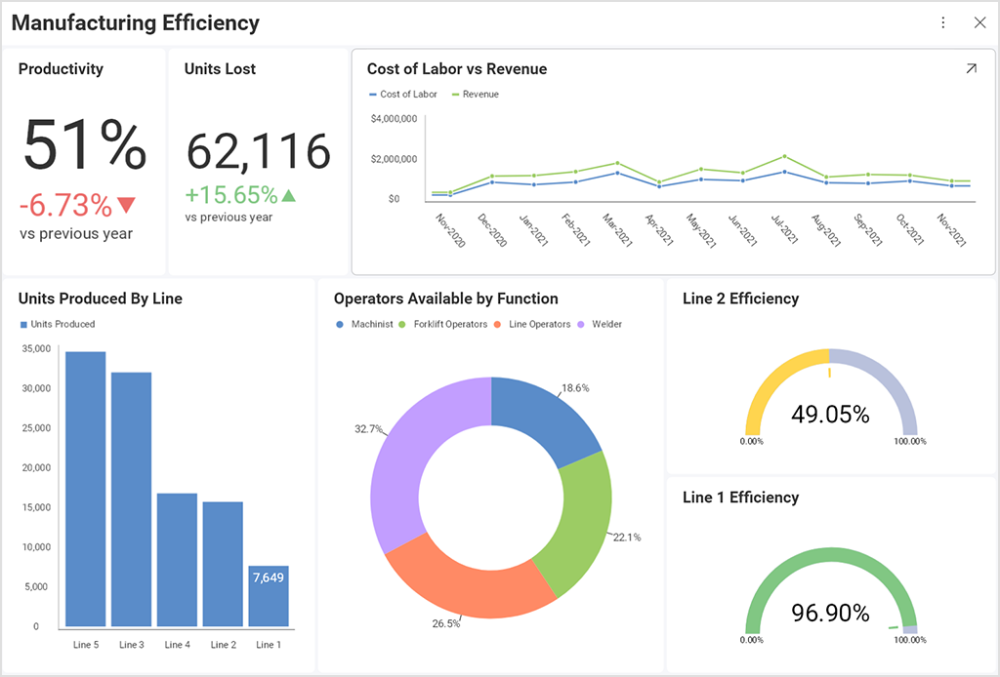

One of my favorite interests is 'data visualization.' It is a significant aspect of the fields of data science and business analysis.
Why is it important? Because it helps managers make informed decisions based on the data they see. Therefore, it is very important to present it clearly to the managers, choosing the right colors and designing effective dashboards. For example:

And I recently took a course about data visualization